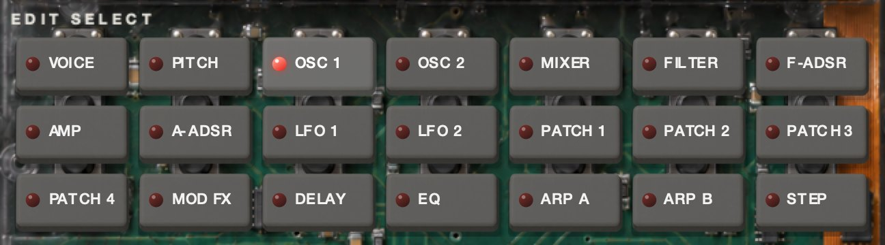
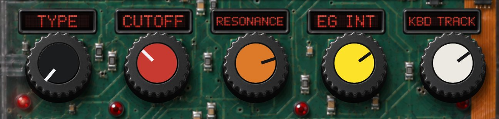
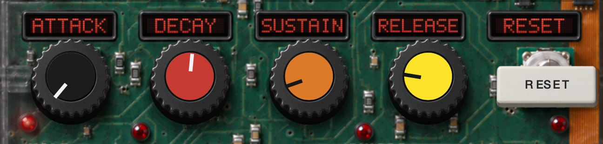
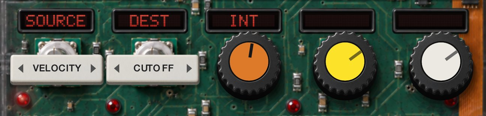
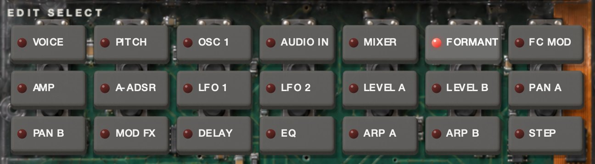

First
Install and activate
On a Mac the installer puts each format you tick in its place. On Windows, copy the whole WINNETKA.vst3 folder — the folder, not the file inside it. Then rescan plug-ins in your music software and look for WINNETKA under Gazillion Industries LLC.
macOS 10.13 or later, Apple Silicon and Intel. Windows 10 or later, 64-bit.
The license key
The first time WINNETKA opens, it asks for your key. It is in your receipt email and on your download page. Copy it and press PASTE: the key goes in and activates in one step. If a key is already on your clipboard when the panel opens, it is filled in for you — press ACTIVATE.
Activation goes online once. After that WINNETKA runs offline on that computer. Until it is activated, it makes no sound.
The first thing it shows
Sounds
Presets and your library
350 factory presets in seven groups.
- ‹ ›
Step through all 350 in order.
- Preset
The menu. FACTORY holds a submenu for each group, with its count. USER LIBRARY holds the sounds you have saved. Then Import, Export and Save.
- Save
Type a name in the bar across the top of the screen. Return saves it to USER LIBRARY; Esc cancels. A name already taken gets a number, as in NAME (2).
- Export
Writes the sound on the panel to a .winnetka file wherever you choose, a held vowel included.
- Import
Opens a .winnetka file, adds it to USER LIBRARY and loads it.
Saved sounds live in Documents › Gazillion Industries › WINNETKA Programs, one .winnetka file each, on Mac and Windows. Share and trade them on the Gazillion Discord; the invite arrives by email after you buy.
A preset holds the whole sound: the mode, both timbres or the vocoder, the effects, the arpeggiator and a held vowel. It never changes the GLOBAL settings listed under Only in your DAW. Your DAW project keeps everything, the window size included.
Single and layer
The synth rows
Fifteen rows make the sound, VOICE through PATCH 4. The last six keys, effects and arpeggiator, work the same in every mode and have their own sections.

Edit select, single and layer
Voice
- Assign
Mono · Poly · UnisonMONO plays one note at a time. UNISON stacks four voices on every note — two per timbre in LAYER — spread apart by DETUNE.
- Trigger
Single · MultiFor MONO and UNISON. SINGLE: overlap your notes and the envelopes keep running while the pitch moves; a fresh phrase starts them over. MULTI: every note restarts them.
- Detune
0 – 99 centsHow far apart the UNISON voices are tuned.
Pitch
- Transpose
±24 semitonesBoth oscillators. The screen calls it BOTH OSC.
- Tune
±50 centsBoth oscillators.
- Portamento
0 – 5 sGlide from one note to the next, from 2 ms up. At 0 there is none. The screen calls it GLIDE.
- Bend
±12 semitonesPitch-bend range. Below zero the wheel bends the other way. The screen calls it PB RANGE.
- Vibrato
±63MW VIBRATO on the screen: vibrato the mod wheel brings in. With the wheel down there is none. At 63, with the wheel all the way up, it swings two semitones either way.
It moves at LFO 2’s rate and in LFO 2’s shape. Below zero the swing is turned upside down.
No mod wheel? Every sound that uses VIBRATO needs the wheel. Draw the MOD WHEEL parameter in your DAW instead — it does exactly what the wheel does.
Osc 1
- Wave
Saw · Pulse · Tri · Sine · Vox · Table · Noise · Audio in
- Control 1
0 – 127Reshapes the wave. What that means depends on WAVE:
- Saw
- Blends in a saw an octave up.
- Pulse
- Narrows the pulse from a square. At the top it thins to nothing.
- Tri
- Blends in a triangle an octave and a fifth up.
- Sine
- Cross-modulates it with OSC 2’s wave, whether or not OSC 2 is in the mix.
- Vox
- A voice-like wave. CONTROL 1 moves its formant from dark to bright.
- Table
- No effect.
- Noise
- Noise filtered around the note you play. CONTROL 1 moves the filter in semitones; at 24 it sits on the note.
- Audio in
- WINNETKA’s audio input, played through the synth while you hold keys. CONTROL 1 balances the two channels: 0 is the right only, 127 the left only.
- Control 2
0 – 127How far LFO 1 moves CONTROL 1.
On TABLE the knob becomes TABLE and picks one of 64 stored waves; the screen shows each one’s number and family, as in 36 KEYS. On NOISE it sets the resonance — turn it up and the noise sings at the pitch.
Osc 2
- Wave
Saw · Square · Tri
- Osc mod
Off · Ring · Sync · Ring syncRING multiplies OSC 2 by OSC 1. SYNC restarts OSC 2 with every cycle of OSC 1, so SEMITONE and TUNE change its tone instead of its pitch. RING SYNC does both.
- Semitone
±24 semitonesAgainst OSC 1.
- Tune
±63Fine near the middle and wide at the ends: an octave at ±48, two at ±63. The screen reads it in cents.
Mixer
- Osc 1
0 – 127
- Osc 2
0 – 127
- Noise
0 – 127White noise, apart from OSC 1’s NOISE wave. All three feed the filter.
Filter

- Type
24 LPF · 12 LPF · 12 BPF · 12 HPF
- Cutoff
20 Hz – 20 kHz
- Resonance
0 – 127
- EG int
±63How far F-ADSR moves the cutoff, up or down. The ends reach ten octaves.
- Kbd track
±63The cutoff follows the keys, pivoting on middle C. At +48 it moves note for note; below zero it closes as you play higher.
F-ADSRA-ADSR

F-ADSR is the filter’s envelope, A-ADSR the amp’s.
- Attack
0 – 20 s
- Decay
0 – 20 s
- Sustain
0 – 127
- Release
0 – 20 sAt 0 a stage is instant; 1 is a millisecond.
- Reset
KeyPuts the four back where a new sound starts: instant attack, decay and release, full sustain. In LAYER with SYNC lit, on both timbres.
Amp
- Level
0 – 127
- Pan
±63
- Dist
KeyDistortion on this timbre.
- Kbd track
±63Level follows the keys, pivoting on middle C: up to 6 dB an octave, louder or quieter as you climb.
LFO 1LFO 2
- Wave
LFO 1: Saw · Square · Tri · S/H LFO 2: Saw · Square+ · Sine · S/HSQUARE+ switches between zero and the top, never below. S/H picks a new random level every cycle.
- Key sync
Off · Timbre · VoiceOFF: one LFO, running free. TIMBRE: one LFO, started again by the first note of each phrase. VOICE: every voice runs its own, started with its note.
- Tempo
KeyLocks the rate to the tempo. RATE becomes NOTE: 1/1 to 1/32, dotted and triplet values included.
- Rate
0.05 – 50 Hz
LFO 1 also moves OSC 1, through CONTROL 2. LFO 2 drives VIBRATO. Both can be patched anywhere.
Patch 1Patch 2Patch 3Patch 4

Four patch cords. Each one sends a SOURCE to a DEST by INT, and cords on the same DEST add up.
- Source
Filter EG · Amp EG · LFO 1 · LFO 2 · Velocity · Key track · P.bend · Mod wheelKEY TRACK is the note’s distance from middle C. P.BEND and MOD WHEEL let the wheels drive anything on the other list.
- Dest
Pitch · Osc2 tune · Osc1 ctrl1 · Noise · Cutoff · Amp · Pan · LFO2 freq
- Int
±63How far, and which way. On PITCH the full 63 is two octaves, so vibrato lives in single digits.
Vocoder
The vocoder
WINNETKA puts the shape of what it hears onto the notes you play. It needs both: audio coming in, and notes.
Twelve of the forty VOCODER presets hold a vowel inside them. They play without any audio at all.
Getting your voice in
WINNETKA has a stereo audio input. The left channel is the voice it listens to. The right channel can carry an instrument to be played through the vocoder as well — raise INST in the MIXER row.
Ableton Live: on the track your voice is on, set Audio To to the WINNETKA track and pick Audio In-WINNETKA in the box under it. If that track is a live mic, set its Monitor to In.
Other DAWs: send your mic or vocal track to WINNETKA’s audio input.
The standalone app starts with its input muted, so it cannot feed back. Click Settings… in the notice at the top of its window, choose your input and untick Mute audio input. Wear headphones.

Edit select, vocoder
VOICE, PITCH, OSC 1, A-ADSR, LFO 1 and LFO 2 work as in SINGLE, on the carrier — the screen calls TRANSPOSE and TUNE CARRIER. There is no OSC 2 here, so SINE’s CONTROL 1 adds harmonics instead.
Audio in
- Gate sense
0 – 127How long the gate takes to close once the voice stops, from 2 ms to 2 s.
- Threshold
0 – 127Below this level the input is shut out. At 0 the gate is off.
- HPF level
0 – 127Sends the top of the voice, above about 4 kHz, straight to the output, so the s’s and t’s cut through.
- HPF gate
KeyLit: that top end only comes through while you hold a key.
Mixer
The carrier: what the vocoder shapes.
- Osc 1
0 – 127
- Inst
0 – 127The right input channel.
- Noise
0 – 127
FC mod
- Source
Amp EG · LFO 1 · LFO 2 · Velocity · Key track · P.bend · Mod wheel
- Intensity
±63Moves the shape with the source, up to four bands either way.
Amp
- Level
0 – 127The internal carrier: OSC 1 and noise.
- Direct
0 – 127Your voice, dry, into the output.
- Dist
KeyDistortion on the carrier.
- Kbd track
±63Carrier level follows the keys, as in SINGLE.
Level ALevel BPan APan B
The knobs read BAND 1 to BAND 8, low to high, and each one sets two neighboring bands of the sixteen. LEVEL A and PAN A hold BAND 1 to 4, the lows; LEVEL B and PAN B hold BAND 5 to 8. The LEVEL rows set how loud each is, the PAN rows place it from left (−63) to right (+63).